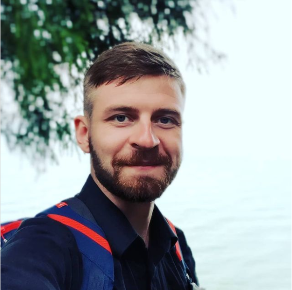

Nakhankou Aliaksei
Male, 28 years
Contacts
- +375 (29) 1320232
- alekseinakhankov@gmail.com — preferred means of communication
Reside in:
- Minsk
Desired position
- Front-end Developer
Employment: full time
Work schedule: full day
Work experience — 6 years 9 months
- October 2020 — till now
- Individual entrepreneur (legal-advisor)
- June 2014 — October 2020
- Worked as a legal advisor in various companies such as: LLC "Glimstedt", LLC «Trade House «Milk hills», LLC "Dobrada"
Obligations
- Legal consulting (written and oral).
- Contracts consideration (reconciliation terms of payment, conditions of projects acceptance, liability etc.) Work with hard clients and clients` objections.
- Running negotiations with debtors (calls, meetings, sending letters). Full-circle of debts collection.
- Representation of companies in state organizations.
- Work with claims against the organization.
- Conducting reports in CRM systems.
Education
Higher. 2015 Belarusian State University, Minsk
Faculty of International relationships, International law
Languages
- Belarusian — Native
- English — B2 — Upper Intermediate
- German — A2 — Elementary
About me:
- In march 2021 finished JAVA Fundamentals course in IT-academy.
- Know HTML5, CSS
- Know JavaScript (ES5/ES6/ES7)
- Know Git & Markdown
- Willing to learn and work on improving my skills and knowledge